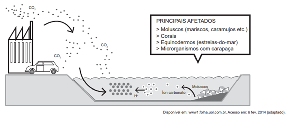

Conteúdo: Energias renováveis; Biomassa; Energia Eólica; Solar; Hidráulica; Geotérmica; Maremotriz; Eletricidade;
Objetivo: Identificar alternativas energéticas renováveis para uso no mundo atual.
Questão 01
(ENEM 2021)
"As atividades mineradoras têm criado conflitos com extrativistas, quilombolas, pequenos agricultores, ribeirinhos, pescadores artesanais e povos indígenas. Em geral, estes sujeitos têm encontrado grande dificuldade de reproduzir suas dinâmicas territoriais depois da instalação da atividade mineradora, nem sempre com reconhecimento do impacto ao seu território pelo Estado e pela empresa, ficando sem qualquer tipo de compensação econômica. Em outros casos, nem a compensação econômica tem sido capaz de evitar o esgarçamento das relações sociais destes grupos que sofrem com a reconstrução abrupta das suas identidades e de suas dinâmicas territoriais.”.
PALHETA, J. M. et al. Conflitos pelo uso do território na Amazônia mineral. Mercator, n. 16, 2017.
O texto apresenta uma relação entre atividade econômica e organização social marcada pelo(a)
Comentário:
O texto aborda o impacto provocado pelas atividades mineradoras nas dinâmicas territoriais de diversos grupos sociais, como quilombolas, ribeirinhos e povos indígenas. Segundo o excerto, a atividade mineradora traz como principal consequência a reconstrução de identidades e dinâmicas territoriais dos grupos afetados, caracterizando um rompimento dos tradicionais vínculos estabelecidos entre os próprios membros e com o espaço que ocupam. Trata-se, portanto, de uma relação marcada pelo rompimento de vínculos locais.
Questão 02
(UNB 2023) O Brasil já produz uma grande parcela de sua eletricidade de fontes renováveis de energia. Dessas, 60% são de energia hidrelétrica, enquanto 20% são de outras fontes, como eólica, biomassa e fotovoltaica. Entretanto, a grande parcela de energia hidrelétrica também traz desafios, que são acentuados pelas mudanças climáticas e períodos de seca. Hoje em dia, regularmente ocorrem gargalos que são compensados com combustíveis fósseis. Isso, por sua vez, está levando a um aumento de emissões de gases de efeito estufa e a uma subida nos preços da energia. O Brasil planeja expandir outras fontes de energia renováveis, tais como a energia solar e a eólica, e ampliar sua eficiência energética. Prevê-se que a participação da energia eólica e solar se multiplicará significativamente.
Internet: www.giz.de (com adaptações).
Considerando os aspectos abordados no texto precedente, julgue o seguinte item.
O biodiesel é um combustível gerado a partir de biomassa vegetal (óleos vegetais) ou animal (gorduras animais) e pode substituir o óleo diesel em caminhões de carga.
Questão 03
(UFT 2022) Analise as afirmativas a seguir sobre as fontes energéticas:
I. a energia solar tem como desvantagens a dificuldade de armazenamento e a dependência de condições climáticas.
II. a energia por biomassa é produzida através de materiais orgânicos de origem vegetal e apresenta como vantagem baixo custo de produção.
III. a energia eólica tem origem a partir dos movimentos das massas de ar e dos ventos que são captados por turbinas chamados de aerogeradores.
IV. a energia geotérmica é proveniente da variação diária das marés, das correntes marítimas e das ondas e tem como vantagem o preço baixo na exploração.
Assinale a alternativa CORRETA.
Questão 04
(UFAM 2021) As fontes alternativas de energia são matérias-primas que não utilizam derivados de petróleo e outros combustíveis fósseis para geração de energia.
A fonte de energia que utiliza o calor interno da Terra é o(a):
Questão 05
(UNESP 2021) Nas atividades cotidianas de indústrias, de empresas ou de pessoas em suas residências, o empenho pelo aumento da eficiência energética pode contribuir para
(Coloque a citação aqui)
Questão 06
(PUC 2024) O biodiesel é um combustível feito a partir de plantas (óleos vegetais) ou de animais (gordura animal), com a finalidade de substituir o óleo diesel em automóveis pesados, como caminhões. Esses óleos (vegetais ou animais) são misturados com etanol, proveniente da cana-de-açúcar, ou metanol, que pode ser obtido a partir da biomassa de madeiras. Ou seja, é um combustível orgânico e renovável. Dentre as benesses ambientais da produção e uso do biodiesel para a Terra, destaca-se a:
O biodiesel é uma importante alternativa para a substituição de combustíveis fósseis, como o petróleo e o gás natural, portanto, contribui para a diminuição da emissão de poluentes na atmosfera.
Questão 07
(BRASIL ESCOLA 2025) Sobre fontes de energia alternativas, correlacione as proposições aos respectivos termos e assinale a alternativa que contenha a ordem correta:
( ) A energia é obtida por meio da intensidade dos ventos.
( ) A obtenção de energia provém do calor gerado no interior do planeta.
( ) A energia é obtida por meio da queima de plantas, madeira, matérias vegetais e animais.
(1) Geotérmica
(2) Eólica
(3) Biomassa
Assinale a alternativa correta:
Questão 08
(ENEM 2017)

O impacto apresentado nesse ambiente tem sido intensificado pela
Correta. Letra C. Como mostrado na imagem, a grande presença de CO2, efeito da queima de combustíveis pela indústria e por automóveis, tem um grande impacto sobre alguns seres vivos marinhos como: moluscos, corais, equinodermos e microrganismos com carapaça.
Questão 09
(ENEM 2015)
"A energia de Fernando de Noronha virá do mar, do ar, do sol e até do lixo produzido por seus moradores e visitantes. É o que promete o projeto de substituição da matriz energética da ilha, que prevê a troca dos geradores atuais, que consomem 310 mil litros de diesel por mês. ”.
GUIBU, F. Folha de S. Paulo, 19 ago. 2012 (adaptado).
No texto, está apresentada a nova matriz energética do Parque Nacional Marinho de Fernando de Noronha. A escolha por essa nova matriz prioriza o(a)
A utilização de fontes renováveis de energia, por meio da utilização de elementos como mar (maremotriz), ar (eólica), sol (solar) e lixo (biomassa), produz uma ampla diminuição da emissão de gases poluentes. Sendo assim, as matrizes renováveis de energia possibilitam um menor impacto no meio ambiente e uma maior manutenção das condições biológicas locais.
Questão 10
(MUNDO EDUCAÇÃO 2025) A energia gerada pela força dos ventos é chamada de eólica. As usinas eólicas são comumente implantadas em áreas onde há uma elevada circulação atmosférica, que garante a continuidade dos ventos para a ativação das turbinas. Dentre as vantagens da energia eólica, pode-se citar:
As usinas eólicas utilizam como elemento gerador de energia o vento. Além disso, ocupam uma pequena área, podem ser instaladas em um terreno com outras práticas econômicas, e não produzem resíduos. Desse modo, elas produzem baixo impacto no meio ambiente.